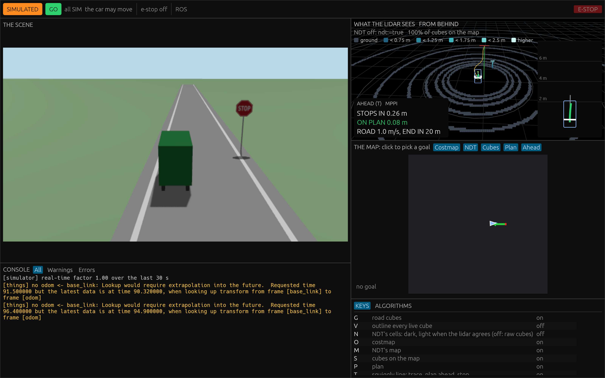
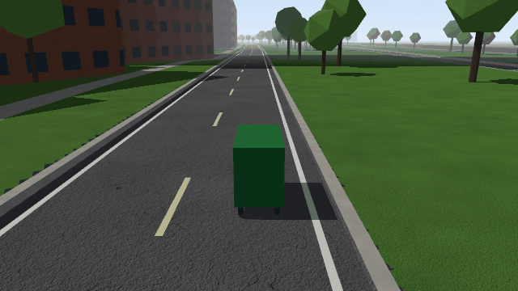

The software for Carleton's autonomous car (AAV), built by the 2026-27 capstone team,
as it stands on 17 Nov 2026. It takes about 10 minutes to read.
Almost all of it has run only in our simulator
Every number on this page comes from Ravensim (our simulator), bench mode, QEMU
or unit tests, unless it says "car". The real car drove on 13 Nov with only the
localization update installed (Status).
In one line
A self-driving stack of our own, mostly in Rust, that drives a simulated Carleton
campus end to end, and beat Nav2 (the standard ROS navigation stack) on the same routes.
The headline numbers
What
Ours
The yardstick
From
Legs reached, 3 tours (lot, campus, University Drive), in Ravensim
SENSORS lidar · radar · cameras · IMU · GPS · wheels
│ (on the car, or Ravensim in their place)
▼
LOCALIZATION two EKFs + GPS ── lane pose ── NDT on map chunks ── (KISS-ICP trial)
│
PERCEPTION lidar cubes · kerb step finder · RF-DETR camera detector
lane finder · radar clusters · the things tracker
│
MAPS three levels on 64 m chunks (RavenTiles)
route: Lanelet2 / street graph ─ path: ~100 m ahead ─ close up: costmap
│
BEHAVIOUR drive · approach · wait · go: stop signs, anything moving, parked things
│
PLANNING the lane's centre (path:=lane) · lattice / Hybrid-A* in Rust
│
CONTROL MPPI that knows the lag ──► twist_mux ──► ego (+ the pedal, speed loops)
│
SAFETY LOCKS e-stop · stop zone · watchdog · geofence · stop hold (never swapped)
│
FIRMWARE the spine (Rust, Embassy) · today's ESP32 · Picos
▼
THE CAR (or Ravensim: the same topics, so nothing above can tell)
Every box talks only through ROS topics fixed in docs/interfaces.yaml. So any box can
be swapped for another that gives the same topics: a new algorithm, or the simulator in
place of the car. More: How it fits.

How to read the tables
Mark
Means
✅
the champion: the default in stack:=ours
⚔️
a challenger: runs beside the champion, takes over only if it wins on the same routes
sim
works in Ravensim
built
in the repo with its tests, not yet driven in the simulator
car
has worked on the real car
Who built what is in Features. Nearly everything here is Ben's; the other
names are in Who.
The areas
Ravensim: our simulator
What it does
Algorithms we built
Language
Status
Key number
Plays the car: world, car, lidar, radar, IMU, GPS, wheels, clock, on the car's own topics
✅ Ravensim (aav_simulator); reads the same SDF worlds Gazebo did
Rust
sim
passed every sim-check leg Gazebo passed (8 Nov)
Cameras
✅ aav_sim_cameras (Bevy, no window); camera lockstep: with no GPU the clock waits for each picture; graphics:=pretty (17 Nov): grain, a sky, haze, painted stop lines
Rust
sim
640 x 360, Gazebo's lens and rate
Faults on purpose
pixi run sim-fault, sim-check --faults, --actuator-faults
Python
sim
14 sensor faults; 6 of 6 actuator faults
Wheels that slip, kerbs that stop the car
seeded wheel noise and slip; each wheel finds the ground
Rust
sim
a 0.3 m kerb stops the car
Big maps
RavenTiles: a map cut into 64 m chunks
data
sim
the campus in 625 chunks a detail
What the car's cameras see on the campus, before and after graphics:=pretty
(Looks):
Before
After

Screens
What it does
What we built
Language
Status
In-car HUD, on the Pi
✅ the HUD, with a SIMULATED banner, GO / STOP, the squiggly line ahead, themes
Rust (raylib)
sim
Every sensor's number, OK / STALE / NEVER
✅ the hardware panel, with steering calibration and graphs pages
Rust (raylib)
sim
The street map, offline, with place search
✅ the map window
Rust (raylib)
sim
Everything at once on a laptop: scene, console, lanes, chunks
✅ the developer window
Rust (Bevy)
built
A frozen screen stops the car: each screen sends a heartbeat, STALE within 1 s
(Safety case).
Localization: where am I
What it does
Algorithms we built
Language
Status
Key number
Smooth pose from wheels and IMU, plus GPS
✅ two EKFs (stock robot_localization), a GPS outlier gate, heading from the gyro and from GPS
Python
sim
parked, the global EKF stays within 0.2 m
Sideways correction from the painted lines
✅ lane pose (aav_lane_pose), the default since 17 Nov where there is a camera and a lane map
Python
sim
University Drive sideways error 9.2-9.9 → 6.9-7.8 cm
Pose from a saved lidar map
⚔️ NDT (aav_ndt), loading only the 3 x 3 chunks round the car; ⚔️ NDT into the global EKF (ndt_ekf)
Rust
sim
ndt_ekf is calmer on every tour, but stopped once in 2 of 3 runs: "recommended next"
Lidar odometry, no map
⚔️ KISS-ICP (stock, MIT) into the local EKF
Python
sim
a trial
Health checks
✅ localization health
Rust (Python twin)
sim
1.5 % of a core against 9.4 %
Perception: what is around
What it does
Algorithms we built
Language
Status
Key number
Lidar as cubes (voxels)
✅ aav_voxels_rs (the Python twin kept)
Rust
built
25 % → 6 % of a core
Kerbs
✅ the step finder with a 10 s memory
Rust
sim
0.3 m kerb seen 8.4 m out; 0.15 m kerb from 4.7 m
Objects in the cameras
✅ RF-DETR Nano; YOLO as an option; Core ML on a Mac
Python (ONNX)
sim
saw a stop sign from 20 m (YOLO11n: 10 m)
Lane lines
✅ the lane finder
Python
sim
lane keeping on a 171 m campus road, mean error 4 cm
Radar
✅ radar clusters
Rust
sim
ported from the 2025-26 team's C++
Things that move
✅ the things tracker (aav_things_rs), cubes on the map's walls dropped
Rust
sim
9.9 things to 1.7; every walker found within 0.2 s
Maps: three levels on fixed chunks
What it does
What we built
Language
Status
Key number
The map in 64 m squares, loading only those near the car and along the route
✅ RavenTiles (map-chunks), each chunk on its own core